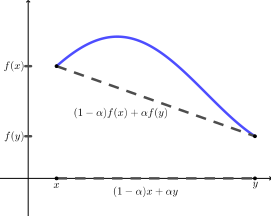

Misalkan \((Y, d_Y)\) suatu ruang metrik. Untuk setiap bilangan real positif \(r\text{,}\) bola terbuka yang berpusat di \(b\) dan berjari-jari \(r\) dalam \((Y, d_Y)\) adalah himpunan
Misalkan \(X\) suatu himpunan. Tunjukkan bahwa fungsi \(d\) (metrik diskret) yang didefinisikan oleh
\begin{equation*}
d(x,y) = \begin{cases}0 \amp \text{ jika } x=y \\ 1 \amp \text{ jika } x \neq y \end{cases}
\end{equation*}
merupakan metrik.
2.
Misalkan \(X = \{1,3,5\} \subset \Z\) dan definisikan \(d: X \times X \to \R\) dengan \(d(x,y) = xy - 1 \pmod{n}\text{.}\) Artinya, \(d(x,y)\) adalah sisa pembagian \(xy - 1\) oleh \(n\text{.}\)
Untuk setiap nilai \(n\text{,}\) tentukan apakah \(d\) mendefinisikan suatu metrik pada \(X\text{.}\) Buktikan jawaban Anda.
Sebagai motivasi untuk definisi berikut, pada \(\R^2\) yang dilengkapi suatu metrik (tidak harus fungsi \(d\) di atas), lingkaran satuan adalah himpunan semua titik di \(\R^2\) yang berjarak \(1\) dari titik asal. Jika jaraknya kita syaratkan kurang dari \(1\text{,}\) kita memperoleh apa yang disebut bola terbuka. Definisi tersebut berlaku dalam setiap ruang metrik. Jika \((X,d)\) merupakan ruang metrik untuk nilai \(n\) yang diberikan, tentukan semua bola terbuka dalam \(X\) yang berpusat di \(1\text{.}\) Jika \((X,d)\) bukan ruang metrik, jelaskan alasannya.
(a)
\(n = 4\)
(b)
\(n = 8\)
3.
Misalkan \(Q\) himpunan semua bilangan rasional dalam bentuk paling sederhana. Bilangan rasional \(\frac{r}{s}\) berada dalam bentuk paling sederhana jika \(s \gt 0\) serta \(r\) dan \(s\) tidak mempunyai faktor persekutuan yang lebih besar dari \(1\text{.}\) Definisikan \(d : Q \times Q \to \R\) dengan
Suatu metrik memungkinkan kita menentukan unsur-unsur mana dalam ruang metrik yang “berdekatan”. Deskripsikan himpunan unsur di \(Q\) yang berjarak kurang dari \(1\) terhadap \(\frac{2}{3}\) dengan menggunakan metrik \(d\) ini. Dengan kata lain, deskripsikan bola terbuka berpusat di \(\frac{2}{3}\) dengan jari-jari \(1\) (lihat Definisi 3.11).
(c)
Jika \(a\text{,}\)\(b\text{,}\) dan \(c\) merupakan unsur suatu ruang metrik \((X, d_X)\text{,}\) kita mengatakan bahwa \(b\) berada di antara \(a\) dan \(c\) jika \(d_X(a,c) = d_X(a,b) + d_X(b,c)\text{.}\) Dengan metrik Euklides pada \(\Q\text{,}\) terdapat tak berhingga banyak bilangan rasional yang berbeda di antara \(0\) dan \(1\) (yaitu bilangan rasional di antara \(0\) dan \(1\) yang terletak pada garis Euklides melalui \(0\) dan \(1\)). Deskripsikan semua titik dalam \((\Q,d)\) yang berada di antara \(0\) dan \(1\text{.}\)
4.
Misalkan \((\Q,d)\) ruang metrik dari Latihan 3. Jika \(a\text{,}\)\(b\text{,}\) dan \(c\) merupakan unsur suatu ruang metrik \((X, d_X)\text{,}\) kita mengatakan bahwa \(b\) berada di antara \(a\) dan \(c\) jika \(d_X(a,c) = d_X(a,b) + d_X(b,c)\text{.}\) Dengan metrik Euklides pada \(\Q\text{,}\) terdapat tak berhingga banyak bilangan rasional yang berbeda di antara \(0\) dan \(1\) (yaitu bilangan rasional di antara \(0\) dan \(1\) yang terletak pada garis Euklides melalui \(0\) dan \(1\)). Dalam latihan ini kita menyelidiki bilangan-bilangan yang berada di antara bilangan lain dalam ruang \((\Q,d)\text{.}\)
(a)
Temukan semua unsur dalam \((\Q,d)\) yang berada di antara \(0\) dan \(1\text{.}\)
(b)
Manakah yang lebih dekat ke \(0\) dalam \((\Q,d)\text{:}\)\(1\) atau \(\frac{1}{3}\text{?}\)
(c)
Sekarang temukan semua unsur dalam \((\Q,d)\) yang berada di antara \(0\) dan \(\frac{1}{3}\text{.}\)
5.
Buktikan bahwa metrik taksi \(d_T\) merupakan metrik pada \(\R^n\text{.}\)
6.
Misalkan \(A\) dan \(B\) subhimpunan berhingga tak kosong dari \(\R\text{,}\) dan misalkan \(A+B = \{a+b \mid a \in A, b \in B\}\text{.}\)
(a)
Buktikan bahwa \(\max (A+B) \leq \max A + \max B\text{.}\)
(b)
Buktikan bahwa metrik maksimum \(d_M\) merupakan metrik pada \(\R^n\text{.}\)
7.
Jika \(x = (x_1, x_2, \ldots, x_n)\text{,}\) kita tuliskan \(|x| = \sqrt{x_1^2+x_2^2+ \cdots + x_n^2}\text{.}\) Untuk \(x = (x_1, x_2, \ldots, x_n)\) dan \(y = (y_1, y_2, \ldots y_n)\text{,}\) definisikan \(d_H: \R^n \times \R^n \to \R\) dengan
\begin{equation*}
d_H(x,y) = \begin{cases}0 \amp \text{ jika } x=y \\ |x|+|y| \amp \text{ selain itu } . \end{cases}
\end{equation*}
(a)
Tunjukkan bahwa \(d_H\) merupakan metrik (disebut metrik hub).
(b)
(i)
Misalkan \(a = \left(\frac{1}{2}, 0\right)\text{.}\) Deskripsikan secara eksplisit titik-titik yang termasuk dalam himpunan \(B(a,1)\) di \((\R^2, d_H)\text{.}\) (Lihat Latihan 2 untuk definisi bola terbuka.)
(ii)
Misalkan \(a = (3,4)\text{.}\) Deskripsikan secara eksplisit titik-titik yang termasuk dalam himpunan \(B(a,1)\) di \((\R^2, d_H)\text{.}\)
(iii)
Sekarang deskripsikan secara eksplisit semua bola terbuka dalam \((\R^2, d_H)\text{.}\)
8.
Misalkan \(\Z\) himpunan bilangan bulat dan \(p\) suatu bilangan prima. Untuk setiap pasangan bilangan bulat berbeda \(m\) dan \(n\text{,}\) terdapat bilangan bulat \(t = t(m,n)\) sedemikian sehingga \(|m-n| = k \times p^t\text{,}\) dengan \(p\) tidak membagi \(k\text{.}\) Sebagai contoh, jika \(p=5\text{,}\)\(m = 34\text{,}\) dan \(n = 7\text{,}\) maka \(m-n = 27 = 27 \times 5^0\text{.}\) Jadi \(t(34,7) = 0\text{.}\) Namun, jika \(m = 54\) dan \(n = 4\text{,}\) maka \(m-n = 50 = 2 \times 5^2\text{.}\) Jadi \(t(54,4) = 2\text{.}\) Definisikan \(d: \Z \times \Z \to \R\) dengan
\begin{equation*}
d(m,n) = \begin{cases}0 \amp \text{ jika } m=n \\ \frac{1}{p^t} \amp \text{ jika } m \neq n. \end{cases}
\end{equation*}
(a)
Tentukan nilai \(d(62,170)\) dengan \(p=3\) dan \(d(14008,2003)\) dengan \(p=7\text{.}\)
(b)
Buktikan bahwa jika \(a\text{,}\)\(b\text{,}\) dan \(c\) berada di \(\Z\text{,}\) maka
Misalkan \(p = 3\text{.}\) Deskripsikan himpunan semua unsur \(x\) dalam \((\Z,d)\) yang memenuhi \(d(x,0) = 1\text{.}\)
(e)
Tetap gunakan \(p=3\text{.}\) Deskripsikan himpunan semua unsur \(x\) dalam \((\Z,d)\) yang memenuhi \(d(x,0) \lt \frac{1}{2}\text{.}\)
9.
Misalkan \((X, d_X)\) dan \((Y, d_Y)\) ruang-ruang metrik. Kita dapat menjadikan hasil kali Kartesius \(X \times Y\) suatu ruang metrik dengan mendefinisikan metrik \(d'\) pada \(X \times Y\) sebagai berikut. Jika \((x_1, y_1)\) dan \((x_2, y_2)\) berada di \(X \times Y\text{,}\) maka
Misalkan \((X, d_X) = (\R, d_E)\) dan \((Y, d_Y) = (\R, d)\text{,}\) dengan \(d\) metrik diskret. Misalkan
\begin{equation*}
A=\{(x,y) \in \R \times \R \mid -1\leq x \leq 1 \text{ dan } -1 \leq y \leq 1\}
\end{equation*}
di \(X \times Y\text{.}\) Misalkan \(a = (0,1)\) di \(X \times Y\text{.}\) Deskripsikan secara geometris bentuk bola terbuka \(B(a,1)\) dalam ruang hasil kali \(X \times Y\text{.}\) Gambarlah bola terbuka ini.
10.
Misalkan \(X = \R^+\text{,}\) himpunan bilangan real positif, dan definisikan \(d: X \times X \to \R\) dengan
Tunjukkan bahwa \(d\) merupakan metrik pada \(\R\text{.}\) (Petunjuk: Untuk pertidaksamaan segitiga, perhatikan bahwa \(d(x,y) = f(|x-y|)\text{,}\) dengan \(f(t) = \frac{t}{t+1}\text{,}\) dan \(f\) merupakan fungsi naik.)
12.
Misalkan \((X,d)\) suatu ruang metrik dan \(k\) suatu konstanta. Definisikan \(kd: X \times X \to \R\) dengan
untuk setiap \(\alpha \in [0,1]\) dan setiap \(x\) serta \(y\) dalam interval tersebut. Perhatikan bahwa ekspresi \((1-\alpha)x + \alpha y\) linear terhadap \(\alpha\text{,}\) bernilai \(x\) ketika \(\alpha = 0\text{,}\) dan bernilai \(y\) ketika \(\alpha = 1\text{.}\) Jadi \((1-\alpha)x + \alpha y\) merupakan parameterisasi ruas garis yang menghubungkan \(x\) dengan \(y\text{.}\) Seperti diperlihatkan Gambar 3.12, persamaan (3.3) menyatakan bahwa grafik fungsi cekung \(f\) pada setiap interval \([x,y]\) terletak di atas garis sekan yang menghubungkan titik \((x,f(x))\) dan \((y,f(y))\text{.}\)

Gambar3.12.Suatu fungsi cekung.
(a)
Misalkan \(f(x) = -x^2\) memetakan \(\R\) ke \(\R\) dengan metrik Euklides standar. Tunjukkan bahwa \(f\) cekung pada interval \([-1,1]\text{.}\)
Mulailah dari fakta bahwa \(\alpha(1-\alpha)(x-y)^2 \geq 0\text{.}\)
(b)
Tunjukkan bahwa jika \(f\) merupakan fungsi cekung pada \([0,\infty)\) dan \(f(0) \geq 0\text{.}\) Jika \(a\) dan \(b\) berada dalam interval tersebut, maka
Tinjau (3.3) dengan \(y=0\text{.}\) Lalu gunakan fakta bahwa \(\frac{a}{a+b}\) berada di \([0,1]\text{.}\)
(c)
Misalkan \((X,d)\) suatu ruang metrik dan \(f: [0, \infty) \to [0, \infty)\) suatu fungsi naik dan cekung sedemikian sehingga \(f(x) = 0\) jika dan hanya jika \(x=0\text{.}\) Buktikan bahwa \(f \circ d\) merupakan metrik pada \(X\text{.}\)
14.
Untuk setiap pernyataan berikut, jawablah benar jika pernyataan itu selalu benar. Jika pernyataan itu hanya kadang-kadang benar atau tidak pernah benar, jawablah salah dan berikan contoh konkret yang menunjukkan bahwa pernyataan tersebut salah. Jika suatu pernyataan benar, jelaskan alasannya.
(a)
Fungsi \(d: \R \times \R \to \R\) yang didefinisikan oleh \(d(x,y) = (x-y)^2\) merupakan metrik pada \(\R\text{.}\)
(b)
Setiap himpunan tak kosong dapat dijadikan ruang metrik.
(c)
Pada setiap himpunan yang memuat sekurang-kurangnya dua unsur, dapat didefinisikan tak berhingga banyak metrik.
(d)
Misalkan \((X, d_X)\) dan \((Y, d_Y)\) ruang-ruang metrik dengan \(|X| \geq 2\text{.}\) Maka fungsi \(d: (X \times Y) \times (X \times Y) \to \R\) yang didefinisikan oleh \(d((a,b),(c,d)) = d_X(a,c)d_Y(b,d)\) merupakan metrik pada \(X \times Y\text{.}\)
(e)
Misalkan \((X,d)\) suatu ruang metrik. Jika \(X\) tak berhingga, maka daerah hasil \(d\) juga merupakan himpunan tak berhingga.